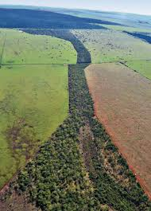

Sobre a Mata Atlântica
História, legislação e iniciativas de conservação do bioma
Missão
Este portal tem como missão divulgar informações científicas e históricas sobre
a Mata Atlântica, promovendo a educação ambiental e o engajamento da sociedade na conservação
de um dos ecossistemas mais ameaçados do mundo.
Com base em dados de órgãos como o Instituto Nacional de Pesquisas Espaciais (INPE), a
Fundação SOS Mata Atlântica e o Ministério do Meio Ambiente, reunimos informações atualizadas
para subsidiar decisões e fomentar a consciência ambiental.
Pilares da Conservação
- Proteção de remanescentes florestais
- Restauração de áreas degradadas
- Uso sustentável dos recursos naturais
- Educação ambiental e pesquisa científica
- Monitoramento e fiscalização ambiental
- Engajamento de comunidades locais
HISTORICO
Linha do Tempo
1500
Começou o ciclo de exploração do Pau-Brasil para a Europa. Inicia-se também o início da degradação do bioma para fixação dos portugueses.
1530-1750
Acontece o ciclo histórico da cana-de-açúcar. A Mata Atlântica foi sendo substituída por monoculturas, que foram sendo abertas por queimas e desmatação.
1727-1930
Ocorreu o ciclo do café no Brasil. Este ciclo econômico impulsionou a urbanização em São Paulo, porém intensificou a desmatação para as moradias e novos plantios.
2006
Lei da Mata Atlântica - Foi aprovado a Lei nº 11.428 para proteção e preservação da área remanescente do bioma.
2026
O bioma é considerado um hotspot, está em foco na recuperação das áreas já protegidas e uma meta ZERO de desmatamento.
"A Mata Atlântica é nosso Patrimônio Nacional. Por lei, qualquer uso de seus recursos deve garantir a preservação e o equilíbrio do meio ambiente."
Constituição Federal do Brasil — Art. 225, § 4º — 1988O que está sendo feito?
Iniciativas de ONGs como SOS Mata Atlântica e WWF-Brasil, monitoramento governamental de áreas protegidas e corredores ecológicos, e a criação desse portal educativo.

Áreas Protegidas
Mais de 1.000 unidades de conservação — parques nacionais, APA's e reservas privadas — protegem fragmentos remanescentes do bioma.
1.000+ unidades
Restauração Florestal
O Pacto pela Restauração da Mata Atlântica reúne mais de 280 organizações comprometidas com a recuperação de 15 milhões de hectares até 2050.
15 mi ha até 2050
Corredores Ecológicos
Projetos interligam fragmentos florestais para permitir o trânsito e a troca genética de fauna e flora entre áreas preservadas.
3 grandes corredores
Engajamento Comunitário
Comunidades ribeirinhas, indígenas e pequenos agricultores são atores centrais na preservação e no uso sustentável do bioma.
280+ organizações